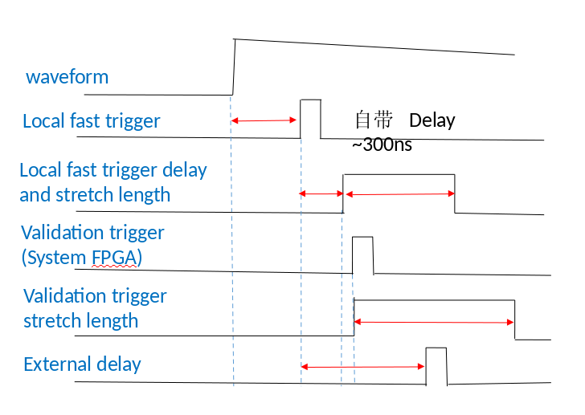

逻辑功能¶
逻辑概括¶
对于某路信号的每个事件是否被有效记录取决于：
Fast trigger select (一级trigger)
Control logic (二级trigger)
快速触发的选择(Fast trigger select)：
快速滤波器(Local fast filter)
通道有效触发(Channel validation trigger)
模块快速触发(Module fast trigger)
控制逻辑(Control logic)：
模块有效触发(Module validation trigger)
通道有效触发(Channel validation trigger)
否决(Veto)
堆积(Pileup)
…
如图所示，输入模拟脉冲首先由 ADC 数字化，然后进入信号处理 FPGA 中的信号处理电路，每个信号处理电路处理来自 Pixie-16 模块的 4 个通道的 ADC 数据。
数字化数据流首先被送入两个分支：快速过滤器(fast filter)生成快速触发(fast triggers)以发送到系统 FPGA，延迟 FIFO 可用于补偿快速触发(fast triggers)和外部触发(external triggers)之间的延迟。
然后，通过延迟 FIFO 的数字化数据流分为四个部分：
能量滤波器，采集能量滤波器在 PeakSample 时间的能量;
触发滤波器，检测脉冲并进行堆积检查;
捕获FIFO，当检测到有效脉冲时，ADC 数据在流入跟踪双端口存储器(DPM)之前根据跟踪延迟参数值延迟 ADC 数据;
CFD 电路，其中生成 CFD 触发以触发 QDC，锁存时间戳和记录波形的计算。
信号处理 FPGA 中的控制逻辑利用本地快速触发(local fast trigger)，CFD 触发(CFD trigger)，否决(VETO)和外部触发(external triggers)来确定是否以及何时将波形数据流入 Trace DPM 并将事件信息写入 Header DPM。 DSP 通过状态寄存器监视 DPM 的状态，并通过 DSP 总线和系统 FPGA 将事件数据移入外部FIFO(External FIFO)。
触发展宽长度(Trigger Stretch Lengths)
外部触发展宽(External trigger stretch) 用于展宽模块有效触发(module validation trigger)脉冲。
通道触发展宽(Channel trigger stretch) 用于展宽通道有效触发(channel validation trigger)脉冲。
Veto展宽(Veto stretch) 用于展宽该通道的否决脉冲。
快速触发背板长度(Fast trigger backplane length) 用于展宽要发送到系统 FPGA 的快速触发脉冲，其中此快速触发可以发送到背板以与其它模块共享，或者可以用于进行符合或多重触发。
FIFO延迟(FIFO Delays)
外部延迟长度(External delay length) 用于延迟输入 ADC 波形和本地快速触发，以便补偿外部触发脉冲的延迟到达，例如: 模块有效触发，通道有效触发等。
快速触发背板延迟(Fast trigger backplane delay) 用于在将快速触发脉冲发送到系统 FPGA 之前将其延迟，以便通过背板与其它模块共享或进行符合或多重触发。
Module Fast Trigger(for trigger)¶
Module fast trigger 有以下四种来源可供选择：
- Ext_FastTrig_In(来源于本插件)
Ext_FastTrig_Sel(前面板 TTL 输入)
Int_FastTrig_Sgl(内部某路 FT)
FTIN_Or(内部 FT 的 OR)
LVDS_FastTrig_FP(前面板网口输入)
ChanTrig_Sel(内部某路的 valid trigger)(与 module validation trigger 共用一个设置)
FT_LocalCrate_BP(本机箱中指定插件送出的 trigger)
FT_In_BP(多机箱中指定机箱上指定插件发送的 trigger)
FT_WiredOr(本机箱中所有插件发送出 trigger 的 OR)
Module Validation Trigger(for control logic)¶
Module validation trigger 有以下来源可供选择：
- Ext_ValidTrig_In(来源于本插件)
Ext_ValidTrig_Sel(前面板 TTL 输入)
Int_ValidTrig_Sgl(内部某路 FT)
FTIN_Or(内部 FT 的 OR)
LVDS_ValidTrig_FP(前面板网口输入)
ChanTrig_Sel(内部某路的 valid trigger) )(与 module fast trigger 共用一个设置)
ET_LocalCrate_BP(本机箱中指定插件送出的 trigger)
ET_In_BP(多机箱中指定机箱上指定插件发送的 trigger)
ET_WiredOr(本机箱中所有插件发送出 trigger 的 OR)
前面板 module GATE 输入 LVDS 信号
Channel Validation Trigger(for trigger/control logic)¶
Channel validation trigger来源有以下选择：
每路独立设置，来源于多重性选择
每路独立设置，来源于符合
每4路共用一个设置，来源于左、中、右插件某路的 FT
每4路共用一个设置，来源于自身 FT 与 Ext_FastTrig_In 的符合
每路独立设置，前面板 channel GATE 输入 LVDS 信号(与前面板 Veto 共用一个输入口)
Veto¶
来源于 ModuleVeto 与 ChannelVeto 的 OR：
- ModuleVeto 来源有两个选择：
Module Validation Trigger
前面板 Module Gate
- ChannelVote 来源有两个选择：
Channel Validtion Trigger
前面板 Gate input for channel (与前面板 Channel validation trigger 共用一个输入口)
System FPGA（coincidence/multiplicity）¶

Multiplicity：对设置的该 channel 来说，左邻插件、自身插件、右邻插件共 48 路，可以选择参与多重性选择的路数
Coincidence：对设置的该 channel 来说，左邻插件、自身插件、右邻插件，每个插件均满足设置的符合条件，才能给出符合触发

其它插件的 fast filter trigger 通过机箱背板传到该插件需要大约 100 ns 左右。因此通过调节门宽、延迟来保证符合、多重性选择的合理设置。
Fast trigger stretch length: 设置 fast trigger 门宽，
fast trigger delay length: 设置 fast trigger 延迟。
Control logic (module/channel validation trigger)
特别需要注意信号经过背板传输大约需要时间 100 ns。